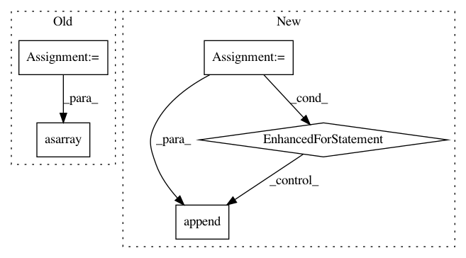

889cde4a62dbcedbb5856ed3b295b742031074ac,io/eolearn/io/processing_api.py,Sentinelhub16bitInput,execute,#Sentinelhub16bitInput#Any#,73
Before Change
images = sorted(images, key=lambda x: x[0])
dates = [date for date, img in images]
norm_factor = [img[1][1] for img in images]
arrays = [img[1][0] for img in images]
if eopatch is None:
eopatch = EOPatch()
eopatch.timestamp = dates
eopatch[(FeatureType.DATA, self.feature_name)] = np.asarray(arrays)
eopatch[(FeatureType.SCALAR, "norm_factor")] = np.asarray(norm_factor)[:,np.newaxis]
return eopatch
After Change
sorted_dates = sorted(dates)
separate_dates = [sorted_dates[0]]
for curr_date in sorted_dates[1:]:
if curr_date - separate_dates[-1] > self.time_difference:
separate_dates.append(curr_date)
dates = separate_dates
// iter_pairs = ((d1, d2) for d1, d2 in zip(sorted_dates[:-1], sorted_dates[1:]))
In pattern: SUPERPATTERN
Frequency: 3
Non-data size: 5
Instances
Project Name: sentinel-hub/eo-learn
Commit Name: 889cde4a62dbcedbb5856ed3b295b742031074ac
Time: 2019-10-11
Author: jovan.visnjic@sinergise.com
File Name: io/eolearn/io/processing_api.py
Class Name: Sentinelhub16bitInput
Method Name: execute
Project Name: dmlc/gluon-cv
Commit Name: ee602b6f68f0bdd19f449a86955697f8f0a2d54c
Time: 2019-09-21
Author: yizhu59@gmail.com
File Name: gluoncv/data/transforms/video.py
Class Name: VideoNormalize
Method Name: forward
Project Name: ellisdg/3DUnetCNN
Commit Name: e6a8a482f15803b24fc4bda6e2a0bd001ca77c87
Time: 2017-04-07
Author: david.ellis@unmc.edu
File Name: data.py
Class Name:
Method Name: read_subject_folder